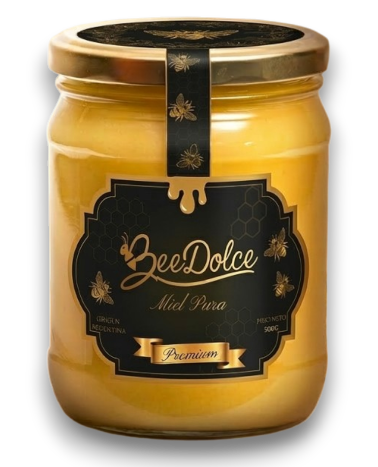
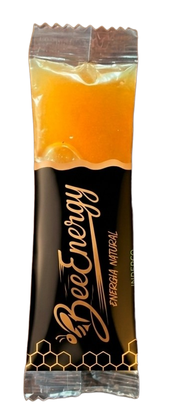
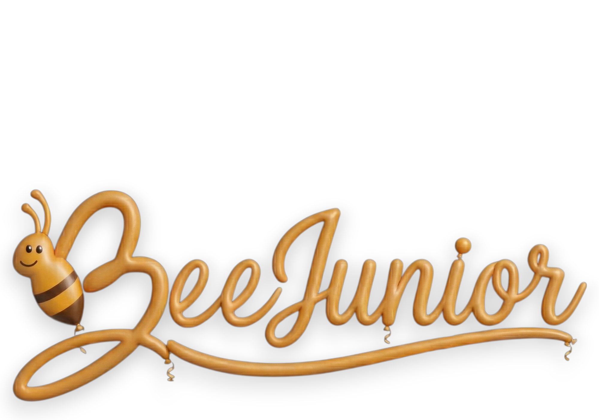
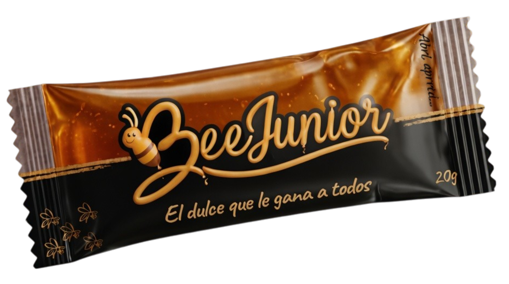

Elegimos por vos. Solo la miel que vale la pena.
BeeDolce es una marca de Inderco, Saladillo. No producimos miel — la seleccionamos. Probamos los mejores productos del pais y elegimos únicamente la miel que cumple nuestros estándares.
El resultado: miel pura, sin aditivos, sin conservantes, sin colorantes. Solo lo que la naturaleza produjo.

Energía natural pura. Lista para cuando más la necesitás.
Un stick de miel pura de abeja, 30 gramos, formato fácil de transportar. Ideal antes, durante o después de entrenar. Sin necesidad de agua, sin preparación — lo abrís y listo.

Los azúcares naturales de la miel se absorben rápidamente, brindando energía disponible en minutos. Ideal como combustible pre y post entrenamiento.
El stick de 30g entra en cualquier bolsillo, morral o riñonera. Sin derramar, sin ensuciar. Diseñado para llevarlo siempre.
Ingredientes: Miel pura de abeja. Punto. Sin gel energético artificial, sin conservantes, sin colorantes, sin saborizantes.
Valores por porción y por 100g. Todos los valores corresponden a miel pura de abeja sin procesar.
| Nutriente | Por porción (30g) | Por 100g |
|---|---|---|
| Valor energético | 91 kcal / 381 kJ | 304 kcal / 1272 kJ |
| Hidratos de carbono | 24,7 g | 82,4 g |
| De los cuales azúcares | 24,6 g | 82,1 g |
| Proteínas | 0,1 g | 0,3 g |
| Grasas totales | 0 g | 0 g |
| De las cuales saturadas | 0 g | 0 g |
| Grasas trans | 0 g | 0 g |
| Fibra alimentaria | 0,1 g | 0,2 g |
| Sodio | 1 mg | 4 mg |
| * %VD con base en una dieta de 2000 kcal/día — ANMAT Res. 2126/71 | ||
Miel pura de abeja.
Sin aditivos · Sin conservantes · Sin
colorantes · Sin saborizantes
Inderco · Saladillo, Buenos Aires, Argentina
RNPA: en trámite · Industria Argentina

La dulzura natural que los chicos merecen.
Un solo ingrediente: miel pura de abeja. Sin ningún aditivo, sin ninguna trampa.
Tamaño perfecto para llevar al colegio, al deporte o de paseo.
Con aval de médicos pediatras de hospitales públicos.

Valores por porción (1 stick) y por 100g de miel pura.
| Nutriente | Por porción | Por 100g |
|---|---|---|
| Valor energético | — kcal | 304 kcal |
| Hidratos de carbono | — g | 82,4 g |
| De los cuales azúcares | — g | 82,1 g |
| Proteínas | — g | 0,3 g |
| Grasas totales | 0 g | 0 g |
| De las cuales saturadas | 0 g | 0 g |
| Grasas trans | 0 g | 0 g |
| Fibra alimentaria | — g | 0,2 g |
| Sodio | — mg | 4 mg |
| * Los valores "—" se completarán al definir el peso final del stick. Los valores por 100g son constantes. %VD base 2000 kcal/día — ANMAT Res. 2126/71 | ||
Miel pura de abeja.
Sin azúcar añadida · Sin colorantes
· Sin conservantes · Sin saborizantes
Inderco · Saladillo, Buenos Aires, Argentina
RNPA: en trámite · Industria Argentina
Avalado por pediatras de hospitales públicos
La miel de siempre, en su forma más suave y untable.
La miel cremada es miel pura procesada para controlar la cristalización natural, logrando una textura suave y untable. Mismos nutrientes, mismo origen — solo diferente consistencia. Ideal para untar, mezclar o disfrutar a cucharadas.
Su textura suave y homogénea la hace ideal sobre tostadas, medialunas, pancakes o cualquier pan artesanal. No escurre, no mancha.
El cremado es un proceso natural que guía la cristalización de la miel hacia microcristales uniformes. Sin calor, sin aditivos — solo técnica apícola.
Mismos valores nutricionales que la miel líquida. Solo cambia la textura. Ingrediente único: miel pura de abeja seleccionada por BeeDolce.
Valores por porción (1 cucharada = 20g) y por 100g. La cremación no altera los valores nutricionales de la miel.
| Nutriente | Por porción (20g) | Por 100g |
|---|---|---|
| Valor energético | 61 kcal / 254 kJ | 304 kcal / 1272 kJ |
| Hidratos de carbono | 16,5 g | 82,4 g |
| De los cuales azúcares | 16,4 g | 82,1 g |
| Proteínas | 0,1 g | 0,3 g |
| Grasas totales | 0 g | 0 g |
| De las cuales saturadas | 0 g | 0 g |
| Grasas trans | 0 g | 0 g |
| Fibra alimentaria | 0,1 g | 0,2 g |
| Sodio | 1 mg | 4 mg |
| * %VD con base en una dieta de 2000 kcal/día — ANMAT Res. 2126/71 | ||
Miel pura de abeja cremada.
Sin aditivos · Sin conservantes · Sin colorantes · Sin saborizantes
Inderco · Saladillo, Buenos Aires, Argentina
RNPA: en trámite · Industria Argentina
"Probamos miles. Elegimos una.
Solo la miel que demuestra
ser la mejor lleva nuestro nombre."
Si sos distribuidor, comercio o simplemente querés saber más sobre BeeDolce, estamos a disposición. Trabajamos con dietéticas, gimnasios, ferias y comercios de todo el país.